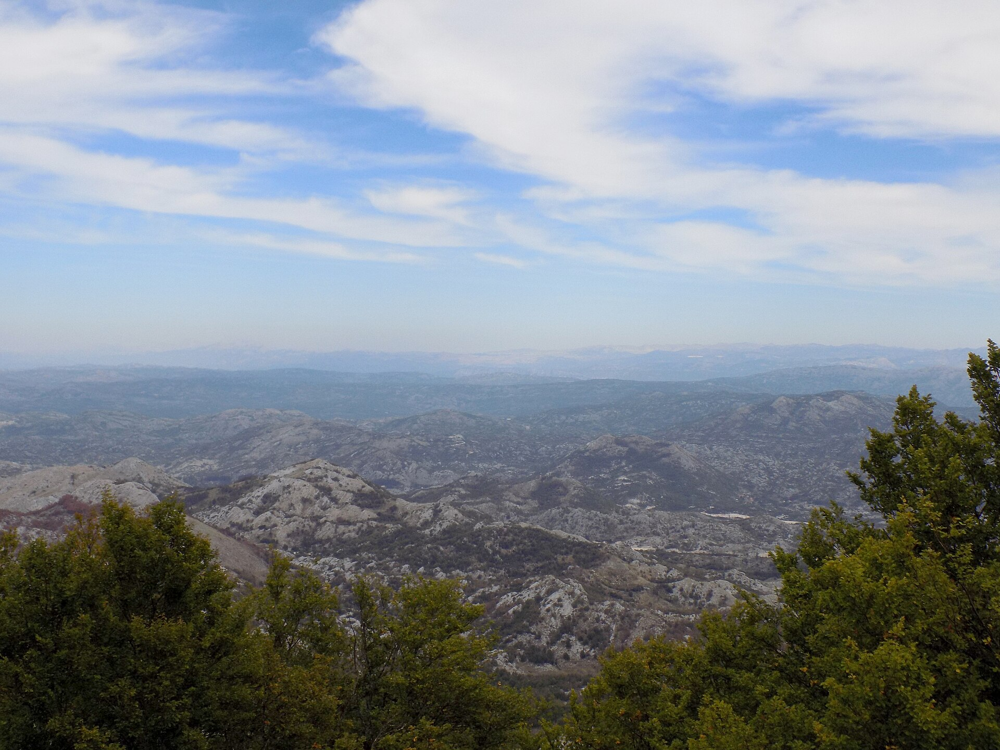

Marked on the map · 2 pins
Nicole's own pins from the map list — each opens straight in Google Maps.

No. 07 · Montenegro · Mountain day above the Bay of Kotor
The black mountain the bay is named after. Reach it the scenic way — the serpentine's 25 hairpins out of Kotor — and you've done the drive everyone talks about before you've even parked.
The list
| No. | Thing | Notes |
|---|---|---|
| 1 | Njegoš Mausoleum | Petar II Petrović-Njegoš sits in black granite at the top. 461 steps from the parking lot — climb it for the 360° over Montenegro. Nicole's verdict: the mausoleum is the point. |
| 2 | The 25 serpentine bends | Taxi or tour from Kotor (no useful public bus). If you drive it, sit on the left going up. |
| 3 | Njeguši village | On the way back down: the village famous for pršut and cheese — taste both, buy some for the bus days. |
| 4 | Walk options | Short ridge trails from the mausoleum parking if you want more legs than viewpoint photos. |
Eat & drink: smokehouse pršut, cheese and honey in Njeguši; book a konoba table ahead in season. Currency is the euro.Field note · Balkans 2027
Marked on the map · 2 pins
Nicole's own pins from the map list — each opens straight in Google Maps.
| No. | Pin | Open |
|---|---|---|
| 1 | Lovćen National Park"Go to Mausoleum." — the Njegoš mausoleum at the summit, 461 steps up. | Maps ↗ |
| 2 | Viewpoint Lovćen National ParkA pull-out on the serpentine with the bay laid out below. | Maps ↗ |